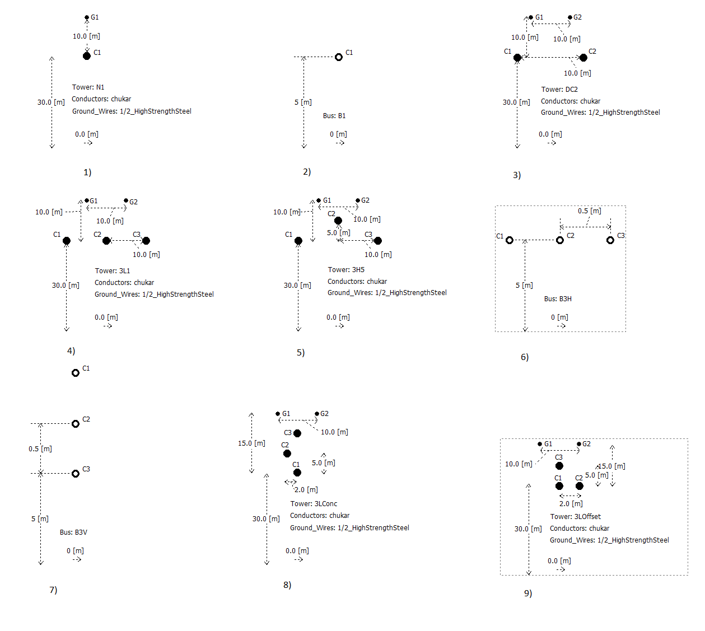
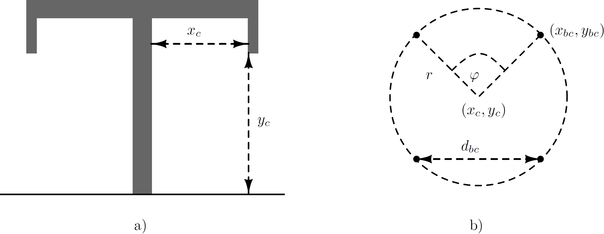
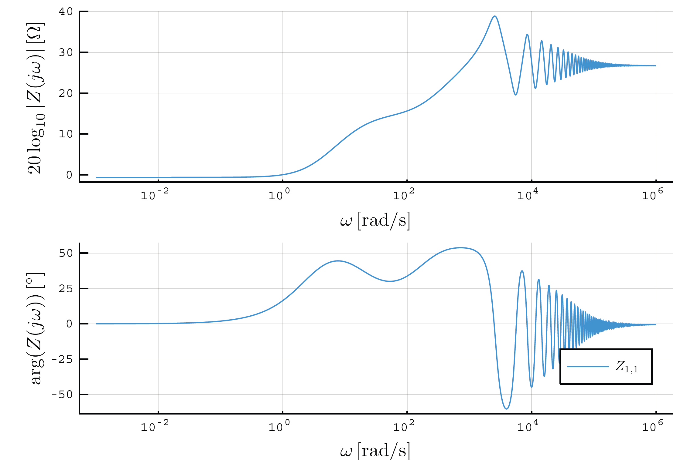

Transmission lines and cables
PowerImpedance evaluates overhead-line and cable series impedance $\mathbf{Z}(f)$ and shunt admittance $\mathbf{Y}(f)$ in phase coordinates, then forms the distributed-parameter transmission-line ABCD model [32, 33]:
\[\begin{bmatrix} \mathbf{A} & \mathbf{B} \\ \mathbf{C} & \mathbf{D} \end{bmatrix} = \begin{bmatrix} \cosh(\mathbf{\Gamma}l) & \mathbf{Y}_c^{-1}\sinh(\mathbf{\Gamma}l) \\ \mathbf{Y}_c\sinh(\mathbf{\Gamma}l) & \cosh(\mathbf{\Gamma}l) \end{bmatrix},\]
where $\mathbf{\Gamma}=\sqrt{\mathbf{Z}\mathbf{Y}}$, $\mathbf{Y}_c=\mathbf{Z}^{-1}\mathbf{\Gamma}$, and $l$ is the line length.
Overhead lines
An overhead-line model combines phase conductors, optional ground wires, and an earth-return model. Conductors may be arranged in flat, vertical, delta, offset, or concentric organizations, or supplied through explicit positions. Bundle geometry, sag correction, conductor resistance and radius, ground-wire data, and earth properties determine the full self and mutual parameter matrices [30].


The complete matrices are retained through the line evaluation; valid mutual coupling is not discarded. Three-phase transformed models apply the requested coordinate transformation only at the component boundary.
Underground cables
A cable group contains coaxial conducting and insulating layers at specified burial positions. The implemented native geometry supports core, sheath, and armor/screen arrangements, layer material properties, and earth-return mutual coupling. Internal grounded layers can be eliminated by Kron reduction to obtain a compact terminal model [35, 38].

LineCableModels interoperability
When LineCableModels and Measurements are loaded, a phase-domain, per-metre LineParameters object can be passed directly as the first argument to overhead_line or cable. Deterministic native construction and Gridspace-aware uncertain construction preserve the dense $\mathbf{Z}$ and $\mathbf{Y}$ matrices. See Package extensions for frequency coverage, interpolation, covariance, and sampling methods.
See overhead_line, cable, Conductors, Groundwires, Conductor, and Insulator for the current native constructors.